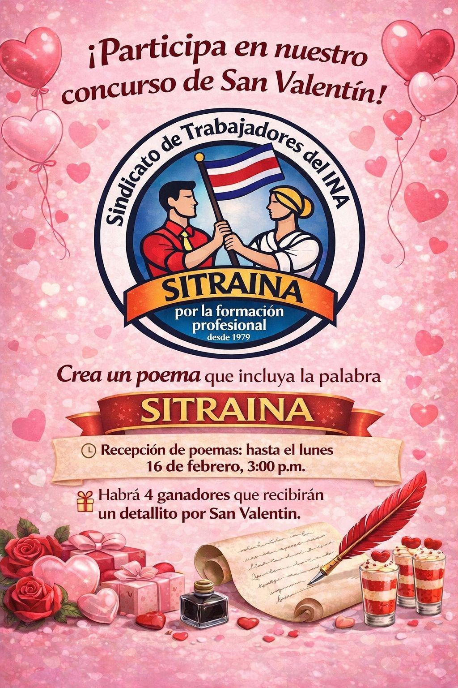
Una fecha dedicada a resaltar los valores de la fraternidad y el compañerismo entre las personas trabajadoras, fortaleciendo los lazos de unidad sindical y respeto mutuo.

Una fecha dedicada a resaltar los valores de la fraternidad y el compañerismo entre las personas trabajadoras, fortaleciendo los lazos de unidad sindical y respeto mutuo.
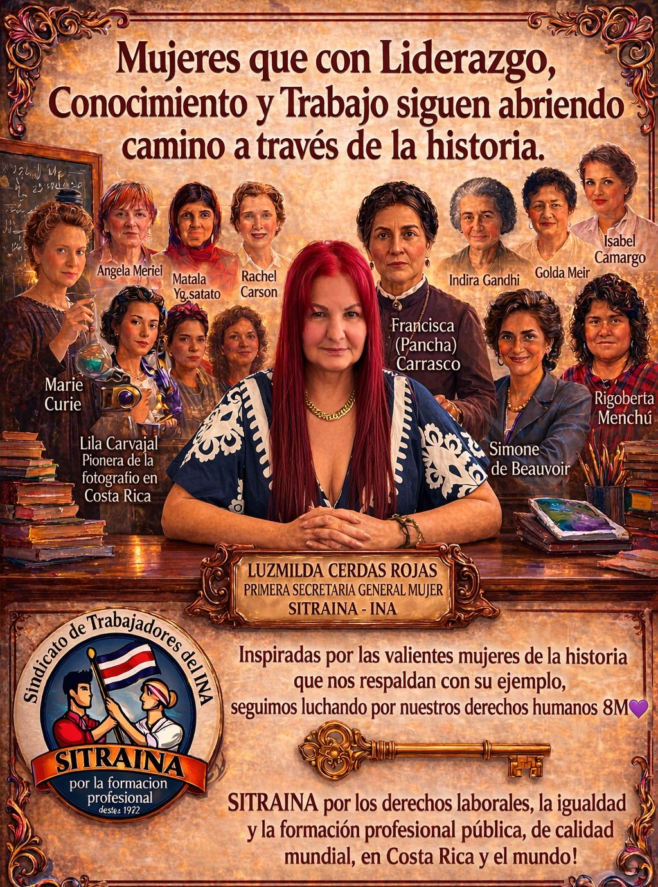
Conmemoramos la lucha histórica de las mujeres por la igualdad, el reconocimiento y el ejercicio efectivo de sus derechos. En SITRAINA reafirmamos el compromiso con la equidad de género.
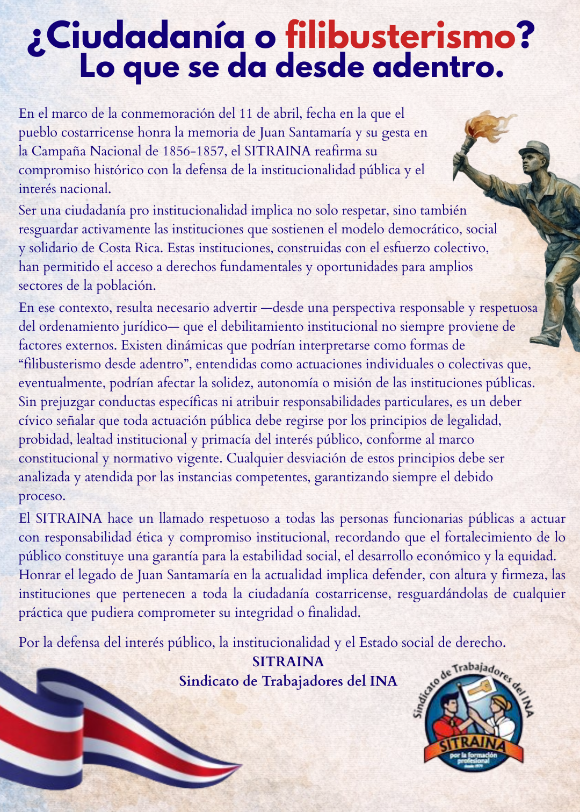
Honramos la gesta heroica de Juan Santamaría y los valientes costarricenses que defendieron nuestra soberanía nacional frente a los filibusteros en la histórica gesta de 1856.
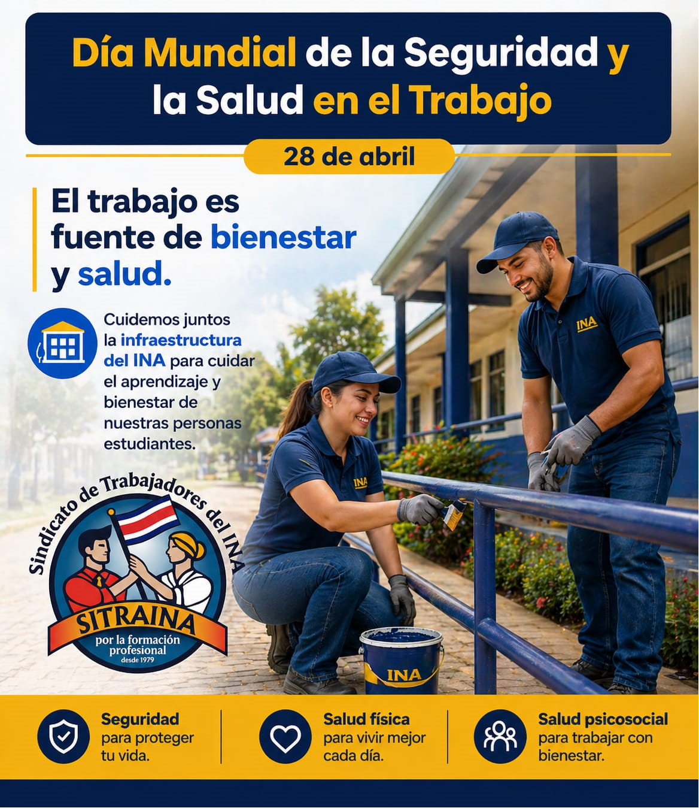
Cada rincón del INA debe ser un lugar donde estudiantes, docentes y trabajadores se sientan protegidos, tranquilos y respetados.
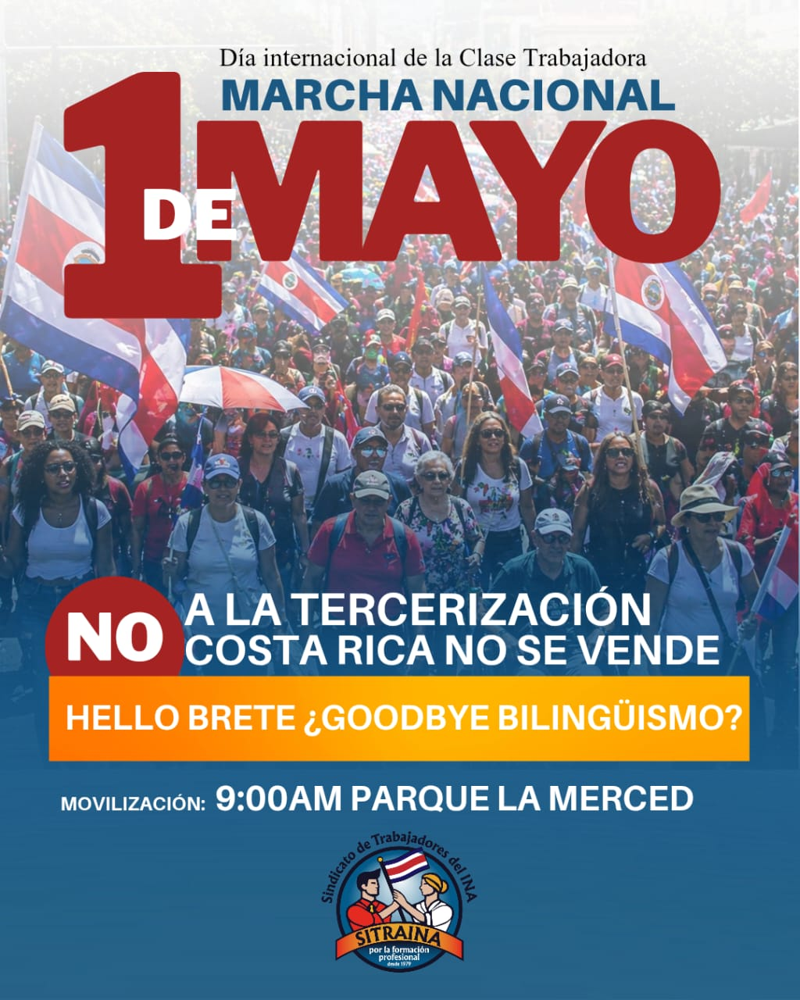
Conmemoramos la lucha histórica de la clase trabajadora. Los derechos que hoy disfrutamos no fueron concesiones, sino conquistas logradas con organización y sacrificio frente a la explotación. Honrar el pasado es defender el presente. Por un salario justo, condiciones dignas y el fin de la precarización laboral: ¡Que viva la lucha de los trabajadores!
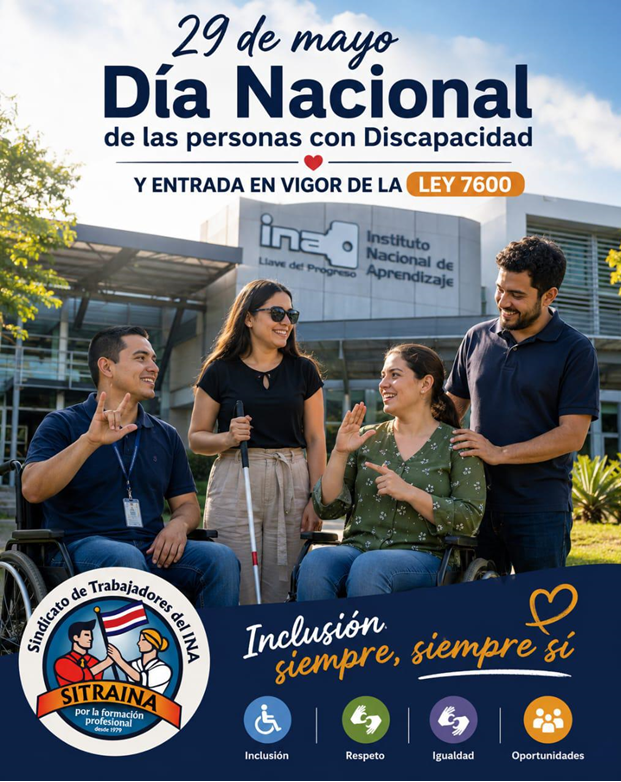
Cada 29 de mayo, Costa Rica conmemora el Día Nacional de las Personas con Discapacidad, de conformidad con el artículo 1 de la Ley N.° 8671, con la finalidad de promover el respeto, la igualdad, los derechos y la comprensión hacia las personas que presentan alguna discapacidad, celebración que se realiza desde el año 2008.
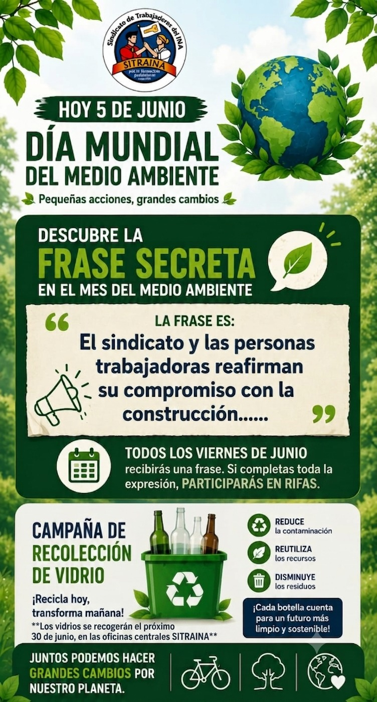
Junio es el Mes del Ambiente. En SITRAINA nos unimos a la celebración con un firme compromiso por el planeta. Por eso, te invitamos a ser parte activa de todas las actividades que tenemos programadas para este mes. Tu participación es clave para marcar la diferencia y promover el cuidado de nuestro entorno. SITRAINA camina hacia un futuro más sostenible.
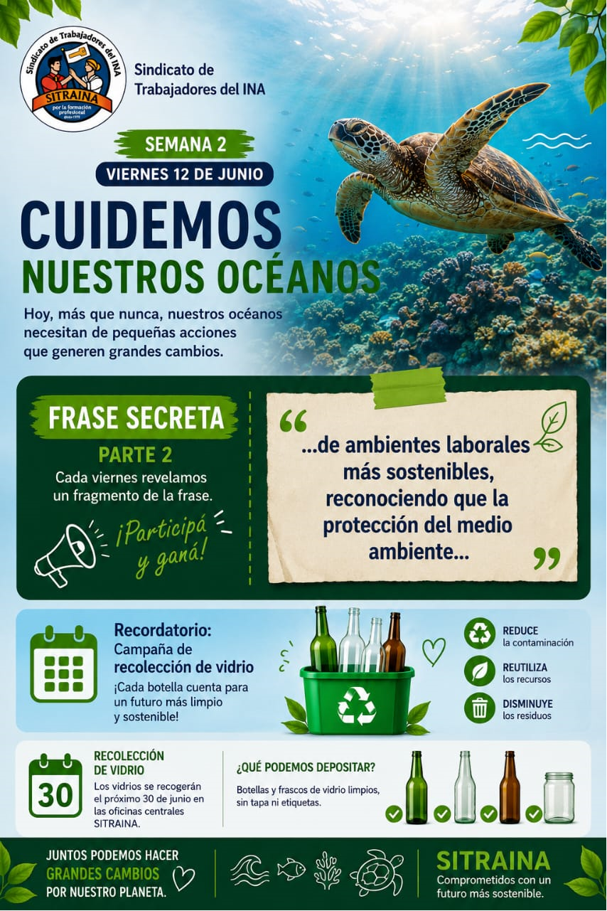
Hoy más que nunca, nuestros océanos necesitan de nosotros. SITRAINA te invita a sumarte en la Semana 2 del Mes del Ambiente a seguir armando la Frase Secreta (Parte 2) para participar y ganar fabulosos premios.
Recordatorio: Ve guardando tus botellas y frascos de vidrio (limpios, sin tapa ni etiquetas). La recolección oficial se realizará el próximo 30 de junio en las oficinas centrales de SITRAINA. ¡Reduce, reutiliza y disminuye los residuos!
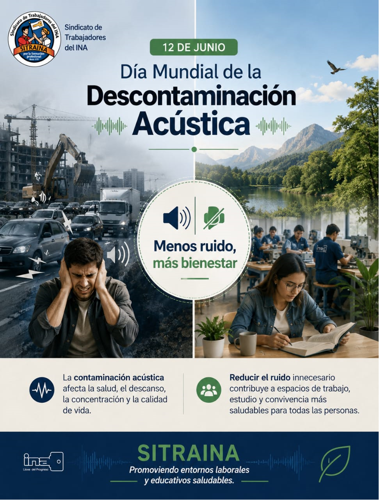
¡Menos ruido, más bienestar! La contaminación acústica afecta directamente nuestra salud, el descanso, la concentración y la calidad de vida. Desde SITRAINA, te invitamos a promover entornos laborales y educativos más saludables reduciendo el ruido innecesario.
Recuerda: un espacio de trabajo y estudio en armonía contribuye a una mejor convivencia para todas las personas. ¡Cuidemos nuestros ambientes!
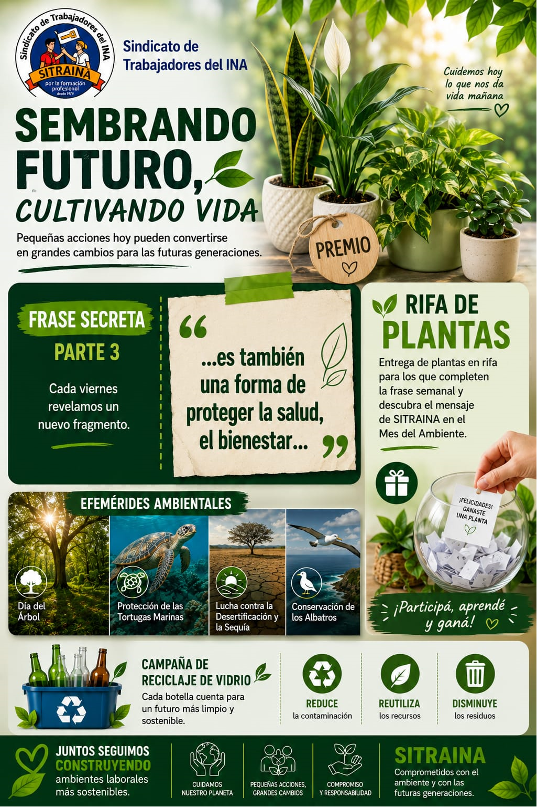
¡Cuidemos hoy lo que nos da vida mañana! En el marco de la celebración del Día del Árbol en Costa Rica y otras efemérides ambientales del mes, te invitamos a sumarte a nuestras iniciativas ecológicas.
¡Participa, aprende y gana! Completa la Frase Secreta (Parte 3) que revelamos cada viernes para descubrir el mensaje ambiental de SITRAINA y participa en nuestra gran Rifa de Plantas. ¡Pequeñas acciones generan grandes cambios!
Celebramos con alegría el Día del Padre en SITRAINA. Reconocemos y valoramos el esfuerzo, la dedicación y el amor de todos los padres que forman parte de nuestra gran familia. ¡Feliz día a todos!
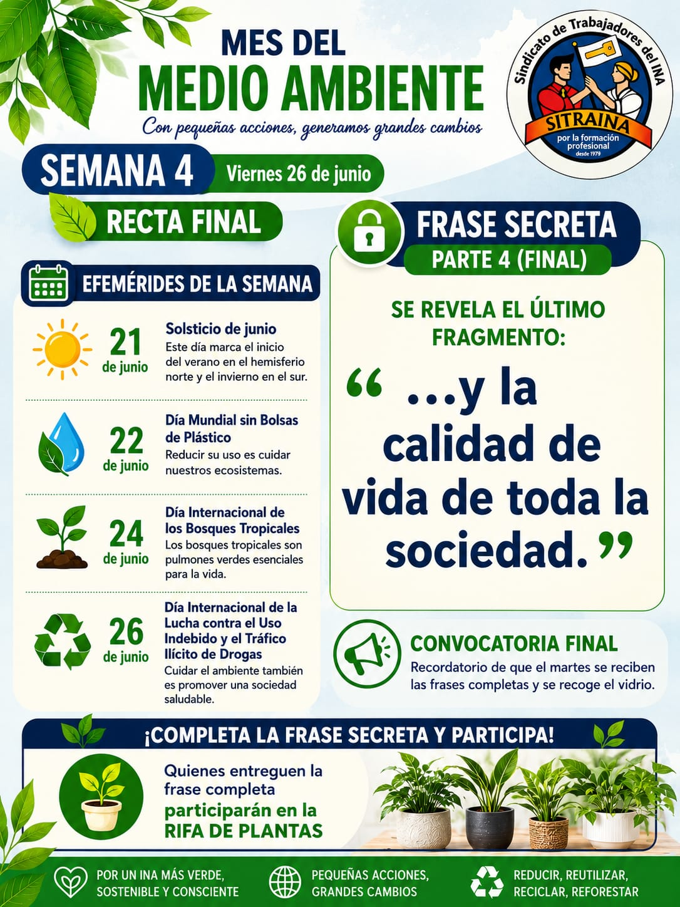
¡Por un INA más verde, sostenible y consciente! Llegamos a la recta final del Mes del Medio Ambiente. Proteger nuestro entorno es un esfuerzo diario y una responsabilidad colectiva: recordar acciones esenciales como reducir, reutilizar, reciclar y reforestar es vital para asegurar el bienestar de nuestro planeta.
¡Llegó el momento de completar el desafío! Revelamos la Frase Secreta (Parte 4 - Final) para cerrar este mes de conciencia ecológica. Recordamos a toda la gran familia de SITRAINA que quienes entreguen la frase completa participarán en la gran Rifa de Plantas. ¡Aportemos nuestro granito de arena por la calidad de vida de toda la sociedad!
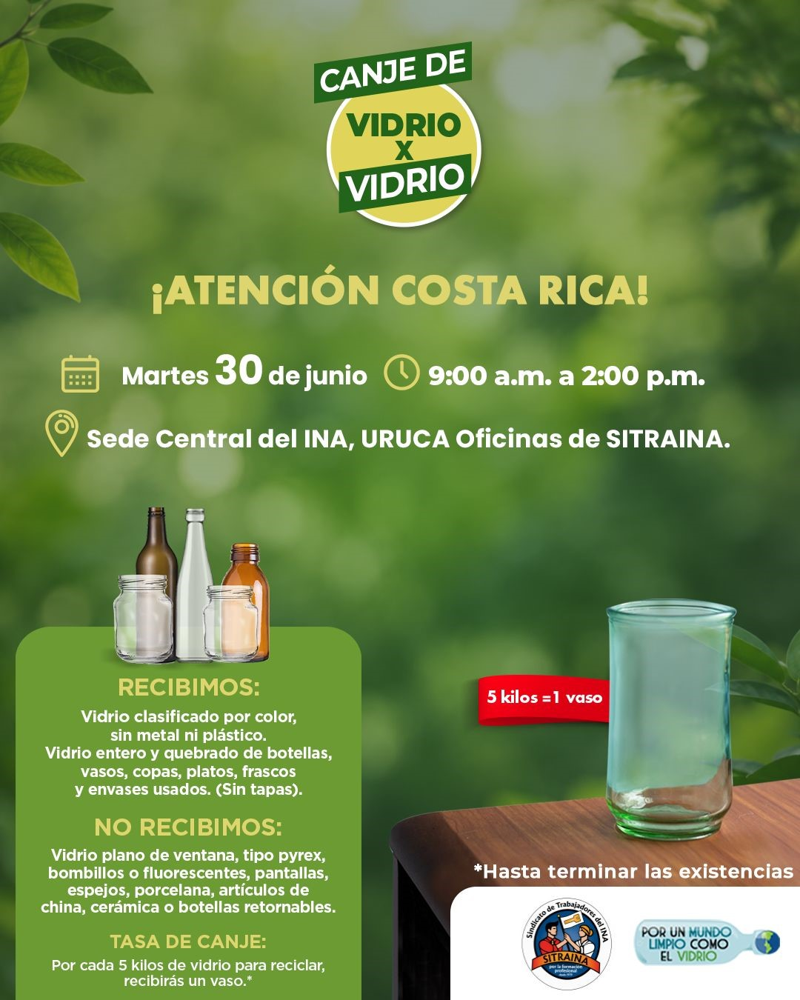
¡Te invitamos a participar en nuestra jornada ecológica! Este martes 30 de junio, únete a la iniciativa Vidrio x Vidrio en la Sede Central del INA, Uruca (Oficinas de SITRAINA), de 9:00 a.m. a 2:00 p.m.
Recuerda: ¡Por cada 5 kilos de vidrio para reciclar, recibirás un vaso! *Hasta terminar existencias.
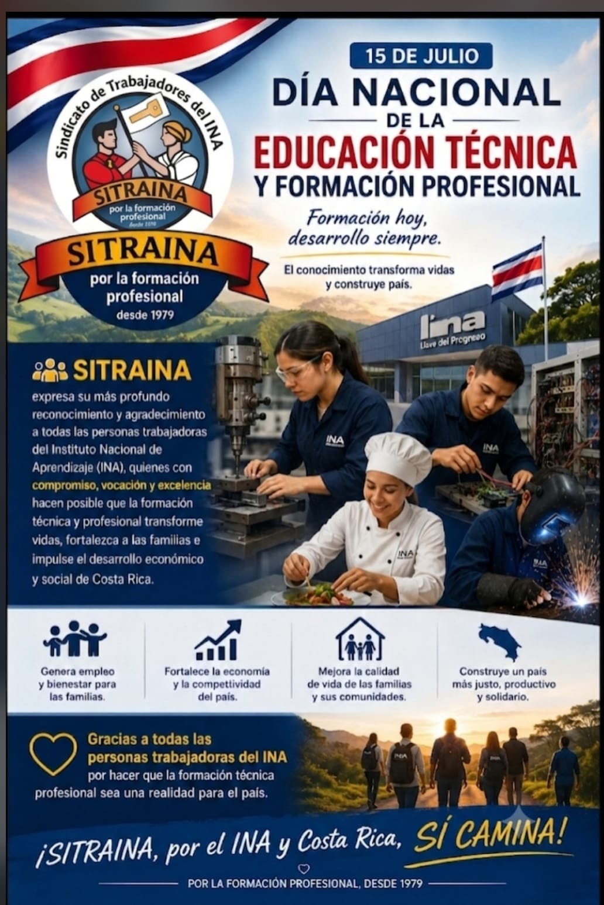
Este miércoles 15 de julio, celebramos el Día Nacional de la Educación Técnica y Formación Profesional. Desde SITRAINA, expresamos nuestro más profundo reconocimiento y agradecimiento a todas las personas trabajadoras del Instituto Nacional de Aprendizaje (INA).
Con compromiso, vocación y excelencia, ustedes hacen posible que la formación técnica y profesional transforme vidas, fortalezca a las familias e impulse el desarrollo económico y social de Costa Rica.
Formación hoy, desarrollo siempre.
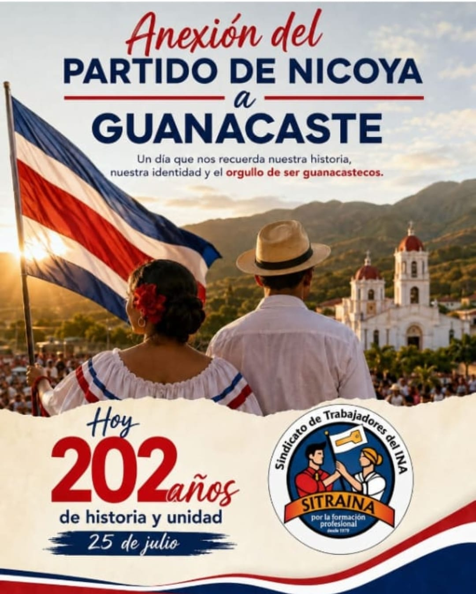
Este 25 de julio celebramos el Día de la Anexión del Partido de Nicoya. Un día que nos recuerda nuestra historia, nuestra identidad y el orgullo de ser guanacastecos.
Desde SITRAINA conmemoramos 202 años de historia y unidad que fortalecen la identidad cultural y el desarrollo de nuestro país.
¡De la patria por nuestra voluntad!
En SITRAINA conmemoramos y celebramos con orgullo el Día de la Madre. Reconocemos el valioso rol, la dedicación y el amor incondicional que las madres aportan cada día a nuestra institución. ¡Feliz día a todas!
Que los años nos traigan sabiduría, pero que jamás nos quiten la capacidad de asombrarnos, de soñar sin límites y de mirar el mundo con la curiosidad de nuestros primeros años. Crecer y asumir responsabilidades no significa apagar la chispa que nos impulsa a explorar; significa usar nuestra experiencia para seguir construyendo, transformando realidades y creando cosas nuevas con la misma pasión, imaginación y valentía que teníamos de niños.
Hoy recordamos que la innovación y la capacidad de superar desafíos nacen de ese espíritu inquieto que no teme intentar algo por primera vez.
SITRAINA te desea un feliz Día del Niño y de la Niña. Sigamos creando, aprendiendo y construyendo juntos un futuro lleno de posibilidades.
Celebrar nuestra independencia es rendir homenaje a la libertad, la paz y la democracia que definen a Costa Rica. Es recordar que la patria no solo se contempla, sino que se construye día a día con esfuerzo, ética, justicia social y el trabajo con el que aportamos al desarrollo de nuestro país.
Como organización comprometida con la clase trabajadora y la educación, reafirmamos nuestra misión de seguir impulsando oportunidades, defendiendo derechos y fortaleciendo las bases que garantizan un futuro más justo, solidario y próspero para todas y todos.
SITRAINA les desea un feliz Día de la Independencia. Sigamos haciendo patria juntos con orgullo, trabajo y esperanza.